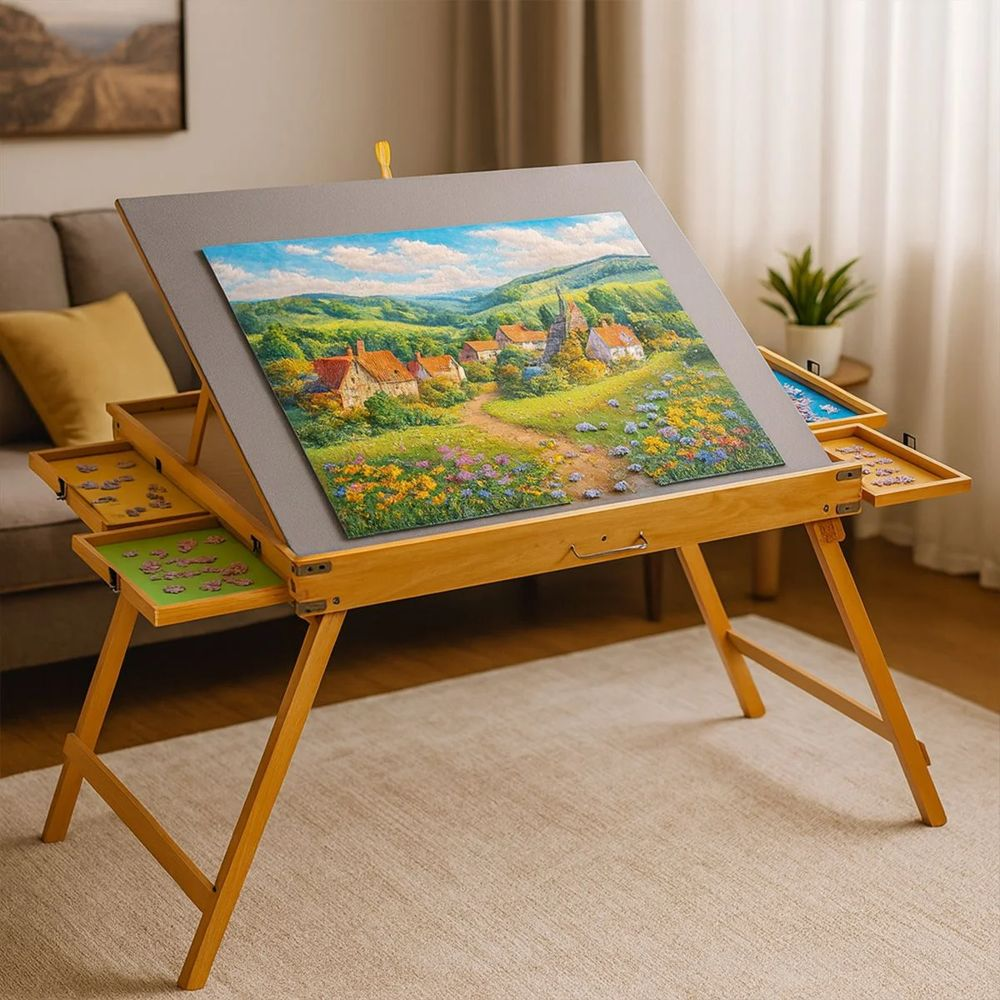

Cosa voglio
- Comodo prima dello stile: voglio che chi viene da noi si senta a suo agio e possa toccare tutto, come in una casa vera e non in un museo.
- Un tavolo da puzzle per fare i puzzle mentre guardo la TV. Questo mi piace: tavola in legno per puzzle da 1500 pezzi, con cassetti e richiudibile.
- Alcuni pasti li faremo qui, davanti alla TV; gli altri in sala da pranzo.
- Nel carico da New York c'è una scrivania di stile simile ai mobili del soggiorno (la scrivania West Elm con i mobiletti): mi va bene usarla come spazio contenitore e scaffalatura in soggiorno e, se serve, come scrivania.
Immagini salvate

Ispirazione salvata

Ispirazione salvata

Ispirazione salvata